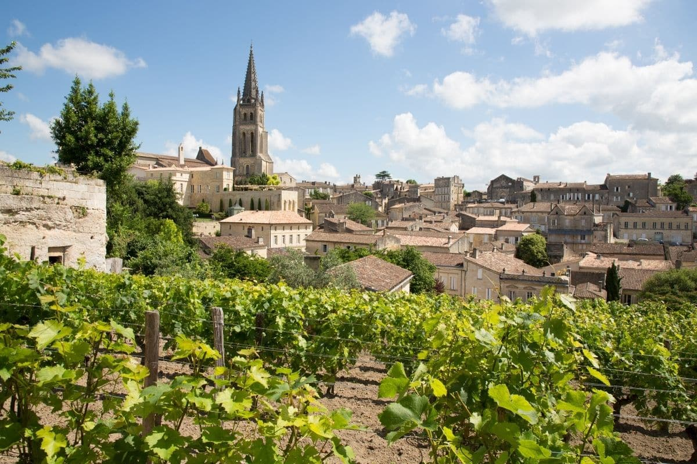
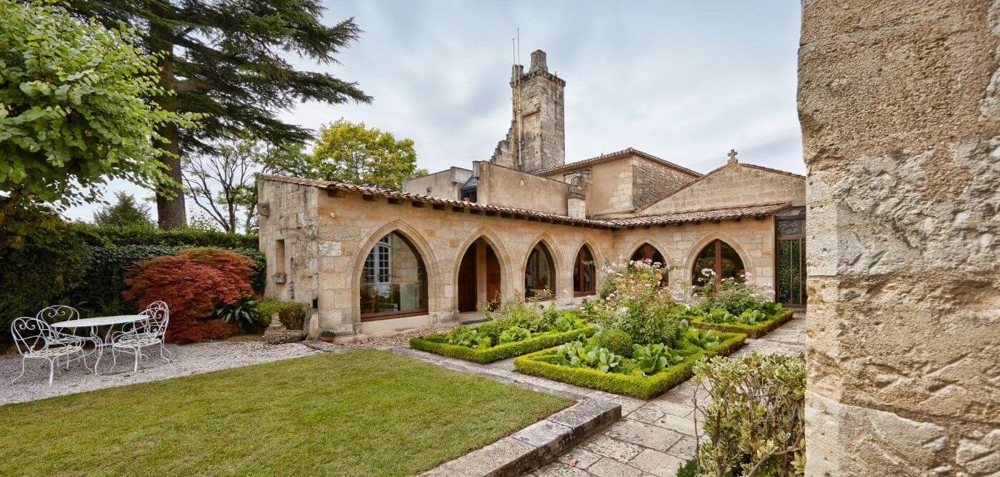
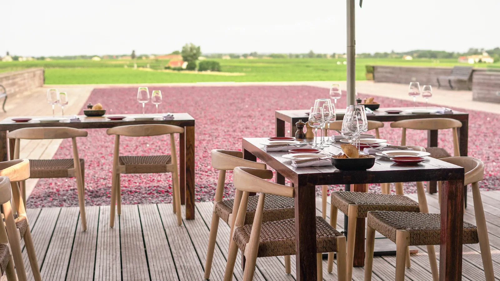
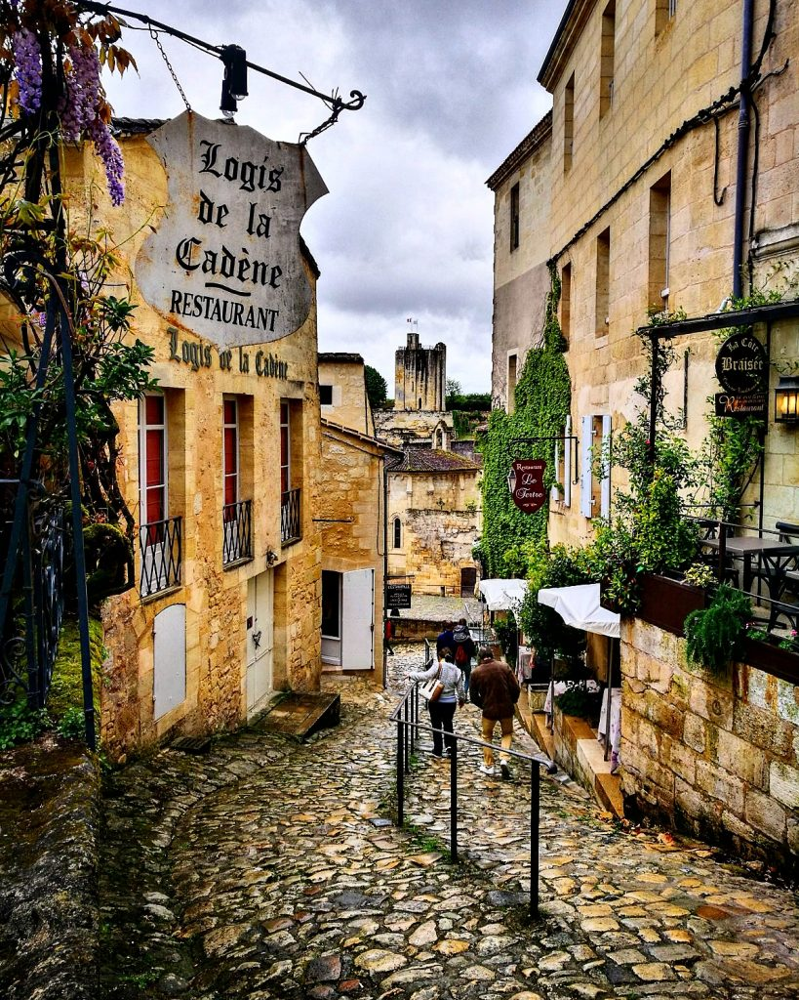

What to pack: Warmer than Paris. Light layers work — shirt sleeves by midday, a light jacket for evening terrace dining. Rain shell stays in the bag but you may not need it. Sunglasses and a hat for vineyard walks.
| Winery | Classification (ranked) | Walkable? | Distance | Family Friendly | Food/Dining |
|---|---|---|---|---|---|
| Couvent des Jacobins ★ Preferred | Grand Cru Classé | ✓ | 2 min walk | ✓ | None (eat in town) |
| Château La Dominique ★ Preferred | Grand Cru Classé | ✗ | 5 min drive | ✓ | Rooftop terrace |
| Troplong Mondot | Premier Grand Cru Classé B | ✗ | 8–10 min drive | • | Michelin restaurant |
| Villemaurine | Grand Cru Classé | ✓ | 5 min walk | • | Tastings only |
| Bernateau | Saint-Émilion Grand Cru | ✗ | 10 min drive | ✓ | Tastings only |

Small, hospitable estate connected to our Airbnb host. Tastings are personal and informative — best for a short morning visit paired with a village stroll. Reserve for groups >4.
Best for: Short, walkable tasting; families; convenience.

A modern estate notable for its rooftop dining and panoramic vineyard views. Prefer booking lunch here rather than a short tasting — the experience is best enjoyed slowly.
Best for: Scenic lunch, relaxed dining.
High-end estate with an outstanding restaurant. Formal tasting visits are limited — dining is the primary attraction. Expect a luxurious experience and book far in advance.
Best for: Michelin-level dining; special occasions.
Pleasant family-run estate within walking distance. Tastings are thoughtful and the outdoor areas make it comfortable with a small child.
Best for: Walkable tasting; gentle visit.
Smaller, relaxed producer a short drive from town — good for a focused tasting without the typical crowds of the larger estates.
Best for: Low-key tasting; family-run feel.

Quick notes for the village: sites, dining, and nearby bottle options if you prefer to buy without visiting each château.
If you prefer to buy bottles without touring each château, these notable names commonly appear in wine shops and restaurant lists nearby. Availability and by-the-glass offerings vary by vendor and season.
| Winery | Classification | Dominant Grape | Bottle Price | By-the-Glass |
|---|---|---|---|---|
| Château Margaux | 1855 First Growth (Premier Cru Classé) | Cabernet Sauvignon | $800–$1,500 | $150–$300 |
| Château Cheval Blanc | Premier Grand Cru Classé A | Cabernet Franc + Merlot | $700–$1,200 | $120–$250 |
| Château Ausone | Premier Grand Cru Classé A | Cabernet Franc + Merlot | $900–$1,500 | Rare |
| Château Canon | Premier Grand Cru Classé B | Merlot | $120–$200 | $30–$60 |
| Château Pavie Macquin | Premier Grand Cru Classé B | Merlot | $90–$150 | $25–$50 |
| Château Larcis Ducasse | Premier Grand Cru Classé B | Merlot + Cabernet Franc | $80–$140 | $25–$45 |
Transit day: train from Paris, pick up the car, and drive east to Saint-Émilion. The main goal is to arrive, get settled, and take an evening walk through the village. Don't try to do too much — you've been traveling since morning.
Train arrives at Bordeaux Saint-Jean. The station is modern and well-signed. Follow signs to the car rental area — most agencies are in the parking structure adjacent to the station or a short walk out the north exit.
Pick up the rental car. Install the car seat (bring the Doona or your own), load luggage. Budget 30–45 min for the rental process — French agencies can be slow. Make sure the car has a GPS or use Google Maps offline (download the Nouvelle-Aquitaine region before the trip).
Quick lunch near the station or grab something for the road. The Marché des Capucins is a 10-minute walk south from the station — Bordeaux's covered market with oysters, charcuterie, and wine by the glass. Worth it if Lucy is cooperating and you have time. Otherwise, there are plenty of cafés along Cours de la Marne near the station.
Drive east to Saint-Émilion. ~45 minutes via the A89 motorway, then D-roads through vineyard country. The landscape shifts quickly — flat urban Bordeaux gives way to rolling vines. Park in the lot below the village (Parking de la Barbanne or similar) — the cobblestone streets inside are steep and narrow.
Today's plan centers on a leisurely rooftop lunch at La Terrasse Rouge at Château La Dominique. Make a reservation for the terrace (12:30 is ideal) — the meal and views are the primary experience here.
Easy morning: coffee, pastries, pack a small bag for the short drive. Prep baby gear and stroller if needed.
Short drive to Château La Dominique. Allow extra time for parking and a quick freshen-up before lunch.
La Terrasse Rouge — rooftop lunch at Château La Dominique. Reserve the terrace; request a spot with vineyard views. Plan for a relaxed 90–120 minute meal.
After lunch, return to the village for a gentle walk, visit a wine shop, or relax at the Airbnb. Options: short village stroll, visit Maison du Vin, or nap time.
Your final full day in Saint-Émilion is focused on a proper visit to Couvent des Jacobins — a guided tour and tasting in the morning, followed by time exploring the village and a flexible lunch.
Couvent des Jacobins — 45-minute guided tour & tasting. Confirm the appointment with Xavier in advance; arrive a few minutes early.
Walk back into the village, visit the Monolithic Church or Maison du Vin, and choose a flexible lunch spot (terrace in town or casual bistro). Keep timing loose — this is a relaxed day.
Return to the Airbnb for rest, pack a small overnight bag for the mountain drive, or take one last stroll through the lanes.
Checkout and drive south toward Lescun. Expect ~3–3.5 hours driving time depending on stops; plan for a relaxed morning and one scenic stop if desired.
Pack, load the car, and check for any last-minute items at the Airbnb. Confirm route and rest stops.
Drive south via A62/A65 then D-roads into the foothills. Consider a quick lunch stop in Pau or a picnic en route.
Arrive in Lescun, check into lodging, and take a short walk to stretch legs — the mountain air is a big change from Bordeaux.
Prepared March 2026. Verify hours, prices, and reservation requirements before travel.
Santé. 🍷